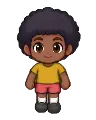

Wiki › Personagens › Mercadora Estelar Zuri

Mercadora Estelar Zuri
🌀 Estádio do Multiverso
Elixires do Multiverso, cristais de foco e o famoso Banquete dos Anões! Equipamento? Ah, isso só caindo dos adversários... e é raríssimo!
Onde fica
🗺️ 🌀 Estádio do Multiverso — embaixo no mapa (sul), perto da placa “👑 CAÇADA ÉPICA”
🧭 Viagem: 🌀 No Rio de Janeiro, fale com o Guardião do Multiverso.
🧭 Caminho: a viagem já deixa você lá.
O que vende
| Item | Nível | Preço na loja | |
|---|---|---|---|
| Elixir do Multiverso | 400 | 🪙 9.500 | |
| Cristal de Foco Rúnico | 400 | 🪙 9.000 | |
| Banquete dos Anões | 400 | 🪙 11.000 | |
| Garrafa de Fôlego Lendária | 300 | 🪙 5.200 | |
| Isotônico de Foco Lendário | 300 | 🪙 4.800 |